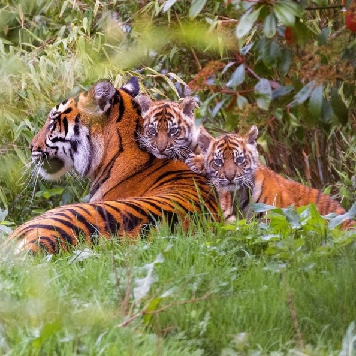
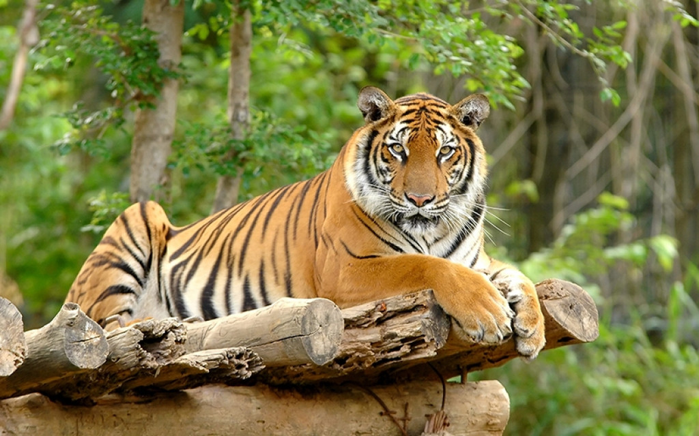
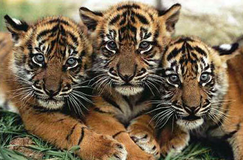
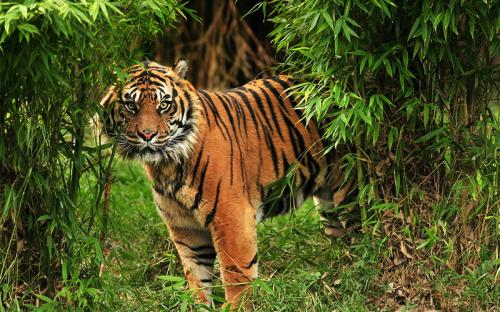

HARIMAU SUMATERA
Harimau Sumatera (Panthera tigris ssp. sumatrae) adalah salah satu jenis hewan karnivora yang terdiri dari sembilan subspesies. Di Indonesia, terdapat tiga subspesies harimau tersebut. Satu-satunya subspesies harimau yang masih dapat ditemukan di Indonesia adalah Harimau Sumatera, sementara dua subspesies lainnya, yaitu Harimau Bali, telah mengalami kepunahan pada tahun 1940-an dan Harimau Jawa punah pada tahun 1980-an.


Klasifikasi
kingdom : Animalia
Phylum : Chordata
Kelas : Animalia
Ordo : Chordata
Famili : Animalia
Genus : Chordata
Spesies : Animalia
SubSpesies : Chordata
Harimau Sumatera memiliki ukuran tubuh yang bervariasi, dengan panjang tubuh berkisar antara 140 hingga 280 cm dan panjang ekor sekitar 60 hingga 110 cm. Secara umum, harimau jantan memiliki bobot dan ukuran badan yang lebih berat dibandingkan dengan harimau betina. Bobot harimau jantan berkisar antara 100 hingga 140 kg, sementara harimau betina memiliki bobot antara 75 hingga 110 kg. Tinggi harimau Sumatera diukur dari kaki ke tengkuk rata-rata adalah sekitar 80–90 cm. Variasi ukuran tubuh harimau tidak hanya terjadi antara jantan dan betina, tetapi juga tergantung pada tiap subspesiesnya. Selain itu, ukuran tubuh harimau juga dipengaruhi oleh lokasi geografisnya. Secara umum, semakin jauh harimau berada dari garis khatulistiwa, ukuran tubuhnya cenderung lebih besar. Seperti manusia yang memiliki sidik jari unik, harimau juga memiliki pembeda khas untuk setiap individu, yaitu pola corak loreng pada tubuhnya.
Corak loreng tersebut memiliki variasi dalam ketebalan, kepadatan, jumlah, dan bentuk, bahkan ada yang terpecah menjadi totol-totol. Warna loreng pada sebagian besar harimau bervariasi dari hitam hingga coklat, dengan cokelat kekuningan sebagai warna dasar tubuh mereka yang dihiasi berbagai corak loreng. Garis hitam di atas mata dari sisi muka harimau dapat bervariasi bentuknya, meskipun umumnya cenderung simetrik. Pada khususnya, harimau Sumatera jantan biasanya memiliki kerut yang lebih mencolok. Bagian perut, kaki sebelah dalam, dan dada cenderung berwarna agak keputihan. Telinga mereka memiliki noda putih di tengah dengan bagian luar berwarna hitam. Ekor harimau memiliki cincin warna hitam di atas warna jingga, kuning, atau kuning tua, dan relatif panjang. Dengan corak loreng yang khas ini, setiap harimau memiliki identitas visual yang membedakannya dari yang lain, mirip dengan cara sidik jari membedakan setiap individu manusia.

Habitat
Habitat harimau Sumatera sangat beragam, meliputi wilayah payau, berawa, dataran pantai, padang rumput, hingga tipe hutan sekunder, hutan primer, lahan pertanian, dan perkebunan masyarakat. Namun, daerah perbatasan antara hutan dan areal garapan masyarakat merupakan habitat yang paling disukai oleh harimau Sumatera. Wilayah ini biasanya banyak dihuni oleh jenis-jenis hewan yang menjadi mangsa harimau, seperti babi hutan, rusa, kijang, dan kancil. Harimau Sumatera juga cenderung menyukai daerah basah, seperti rawa dan sekitar sungai, karena tempat ini menjadi tempat bermain dan berendam bagi mereka. Selain itu, kemungkinan bertemu dengan lawan jenis juga dapat mempengaruhi pemilihan habitat oleh harimau Sumatera.Sebaran
Pada abad ke-19, populasi harimau Sumatera masih tinggi dengan perkiraan mencapai ribuan ekor. Namun, pada tahun 1978, jumlahnya diperkirakan telah menurun menjadi sekitar 1000 ekor. Sayangnya, perkiraan saat ini menyebutkan bahwa jumlah harimau Sumatera yang tersisa hanya sekitar 500 ekor. Dari jumlah tersebut, diperkirakan sekitar 400 ekor hidup di kawasan konservasi utama yang tersebar di pulau Sumatera. Kawasan-kawasan ini dirancang dan dilindungi khusus untuk melestarikan satwa liar, termasuk harimau Sumatera. Namun, ada 100 ekor lainnya yang hidup di kawasan yang tidak dilindungi. Tempat-tempat ini cenderung berubah menjadi lahan pertanian dan perkebunan, sehingga menjadi ancaman bagi kelangsungan hidup harimau Sumatera.Hasil monitoring pada tahun 2010 mengungkapkan bahwa jumlah individu harimau Sumatera terus menurun, hanya berkisar antara 250 hingga 325 ekor. Penurunan populasi ini merupakan suatu kekhawatiran serius bagi kelestarian harimau Sumatera, dan upaya konservasi yang lebih intensif diperlukan untuk menghindari kepunahan spesies yang langka dan dilindungi ini. Kehadiran harimau Sumatera tersebar di 12 lokasi konservasi di pulau Sumatera, dengan hanya dua di antaranya yang termasuk dalam kategori prioritas global, yaitu Bentang Alam Kerinci Seblat dan Bukit Tigapuluh. Selain itu, ada dua bentang alam prioritas regional, yaitu Bukit Balai Rejang Selatan dan Kuala Kampar – Kerumutan.
Habitat harimau Sumatera sebagian besar terdapat di sekitar 14.090.100 hektar hutan. Sayangnya, hanya 29% dari habitat tersebut yang berstatus kawasan yang dilindungi, sementara 71% harimau Sumatera hidup di luar kawasan konservasi, seperti hutan produksi terbatas atau area penggunaan lainnya. Sebaran harimau Sumatera mencakup area seluas 73.000 km2, yang merupakan hanya 51% dari total bentang alam utama di pulau Sumatera. Harimau Sumatera hanya dapat ditemukan di Pulau Sumatera, terutama di bagian utara dan daerah pegunungan di bagian barat daya pulau ini. Populasi harimau Sumatera tersebar di setidaknya 18 kawasan konservasi dan hutan lindung lainnya yang terpisah satu sama lain. Beberapa di antaranya adalah Taman Nasional Bukit Barisan Selatan, Taman Nasional Way Kambas, Bukit Balai Rejang Selatan, Taman Nasional Kerinci Seblat, Lansekap Tesso Nilo–Bukit Tigapuluh di Riau, Senepis – Buluhala di Jambi, PT. Asiatic Persada, Universitas Andalas di Sumatera Barat, Taman Nasional Batang Gadis, dan Ekosistem Leuser. Data menunjukkan bahwa populasi harimau Sumatera cenderung menurun dari tahun ke tahun. Tanpa intervensi pengelolaan yang tepat, harimau Sumatera dapat punah dalam waktu yang tidak terlalu lama. Oleh karena itu, perlunya tindakan konservasi yang serius dan tepat guna untuk melindungi spesies langka ini dari kepunahan.



Status Konservasi
Bedasarkan IUCN Red list Panthera tigris termasuk kategori Critically Endengered dan terdaftar dalam Apendiks I CITES yaitu hewan yang dilarang diburu di Indonesia.